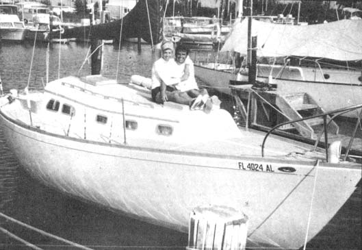

Two Who Got Away (Life On A Small Boat)
Lynn tells us of her life with Bob on a small boat in the Bahamas, and some interesting recipes like Nassau Salt Fish and Rice and Sea Grape Jam.
By Lynn Monfort
July/August 1972
Often an incredulous stranger will ask,"You live on a sailboat?" in the same way he might question, "You live in a tree?". . . and we realize that-to many people-ours must seem a very unusual way of life. Yet, judging by the barrage of queries that follow the original, the sea must capture the imagination of many people . . . just as it's captured our hearts and souls.
It's difficult to trace the beginnings of a dream but ours must have started about the time we looked around at the world and asked ourselves what we really wanted. A more simple, honest and natural way of life, surely . . . one that would offer a high degree of independence and self-sufficiency.
It didn't take us long to start thinking of a boat (perhaps the idea was there all along). There was only one hitch: we had no money and no one to loan us any . . . and the thought of saving long enough to buy the kind of blue-water vessel we wanted seemed an unendurable hardship. So we purchased-for a ridiculously small sum-a very old, very disreputable powerboat. We planned to fix it up ("all she needs is a little work") and resell the craft at a profit.
Don't, we implore you, fall into this trap. "Fixing up" an old boat in no way resembles fixing up an old house. It takes an experienced surveyor to detect the faults hidden away in an aging vessel . . . and to estimate the costs of restoring such a craft to seaworthy condition. And-should you actually find a boat with real possibilities-you must then have the knowledge, money and time to devote to its restoration. After many years of careful observation and experience, we can only say that most dreams of fixing up an old boat seem to die right at the dock.
In this particular case, we lived aboard the aging lady for two difficult years . . . during which every spare minute was spent working on the craft. We made a great many mistakes and spent a great deal of money and, although we did eventually sell the vessel, it was for far less than we had in her. If we had it to do over again we would take those same two years, save our money and learn everything we could about boats. At the end of the 24 months we would be both richer and much more capable of making a wise selection of watercraft.
With that albatross finally removed from our necks, we started all over again . . . only this time we knew what we were doing. We bought Aries, a two-year-old fiberglass sloop, in excellent condition. Fiberglass because we have confidence in the material and because we wanted to avoid the work and expense of keeping up a wooden boat.
Although we've seen others live in much smaller vessels, we picked a 30-footer and it seems "right" to us. Still, we're constantly asked how we manage to exist in such a small area.
If there was anything good about our experience with the old powerboat, it was that we learned how to live very simply by discarding all the unnecessary junk that seems to accumulate as long as there's room for it. Only the essentials survive on a live-aboard boat . . . there's just no room for anything else.
Granted, then, that a vessel's limited space dictates, to a certain extent, what stays and what goes when you move aboard . . . but, once divorced from the flotsam and jetsam most of us drag through life, it's amazing how little it's missed. Besides, there's always enough space for the important things . . . Bob's guitar, my typewriter, our books, even an oil painting given to us by a talented friend.
A seaworthy, fairly new, wood or fiberglass live-aboard boat in which you can cruise big water will run you between $5,000 and $10,000. Acquiring the craft, however, is only the beginning. Even a new vessel requires a good deal of maintenance and boat yards, for the most part, are bandits (my apologies to the few honest ones).
You'll soon learn to cut those upkeep expenses, however Bob and I, for instance, spent one afternoon making mosquito covers for the hatches and companionway of our new pride and joy. A "professional" job would have cost at least $50. We did it ourselves with about $10 worth of materials and our workmanship is infinitely superior to that found in most marine products.
Just finding a place to keep a boat when you're not cruising can also run into dollars. Anchoring offshore is least expensive . . . but, unless you have a rich uncle or a fat inheritance, you'll have to spend at least part of each year laboring ashore with the rest of us. During the season that we work on Florida Gold Coast we moor Aries at a comfortable, protected marina just south of Ft. Lauderdale. Dockage, utilities and shower facilities add up to a little over $60 a month. In most areas though, dockage is no real problem. We know of one enterprising couple that anchored their ketch (at no charge) in the middle of Biscayne Bay and used a dingy to get to and from work in Miami.
But, once you have your boat, where will you live . . . area how? Well, the "where" is easy: almost any place that there water will do, although most of us feel that a tropical or subtropical climate is best. For one thing, such a climate guarantees pleasant weather for year-round cruising and, for another, it goes a long way toward solving the question of "how" (there's an abundance of free food in and around the warmer seas.)
We live on very little money when cruising and our goal is to get by on none at all. Bob is an excellent skin diver and provides us with all the fish, conch and crawfish we can eat. Coconuts (another excellent foraged food) are almost always available on the Bahama Islands that we normally frequent.
I've found that canning fruits and vegetables in season is both a great way to add flair to our meals and save dollars. One particular beach we know has several acres of wild cockplums and sea grapes. I can easily put up enough, in just a few days, to last a year and the sea grapes-especially-make some of the most delicious jam and jelly you'll ever taste.
We always have really good, nutritious and inexpensive bread because we carry a supply of wheat and a hand grinder. Whole wheat flour mixed with sea water, you know, can be "baked" in a pressure cooker on top of a kerosene or alcohol stove just as well as in an oven.
Brown rice is also easily stored, very inexpensive and nourishing fishing . . . but hardly exciting. So we transform the humble dish by adding a touch of curry powder and a side dish of homemade mango chutney (the store-bought variety costs $1.59 for a tiny bottle, so chalk up another notable saving for us right there).
We avoid expensive docking fees, bugs and other boats' noisy generators (not to mention noisy inhabitants) by "dropping a hook"-that is, anchoring out-when cruising.
Believe it or not, however, one expense we just can't shave from our Bahamas overhead is the cost of fresh water. The commodity is in short supply in the islands and the fresh variety carries a price tag of $.20 a gallon. Our boat has storage facilities for only 25 gallons so we go easy and catch as much rain as possible. We bathe by jumping overboard and do of laundry and shampoo with the rainwater that collects in our dinghy during squalls.
We've never yet been lucky enough to cruise for a whole year but we've talked to dozens of folks who have and we always try to find out what it costs them. Gross expenditures quoted to us have ranged from a low of $500 per year to a high of $500 a month. The people spending the big money are addicted to freshwater showers, public docks and restaurants . . . while the folks on the other end of the scale use some of the ideas we've found for cutting costs. Still, it's significant to us that-without exception-all the other live-aboards we've talked to depend on relatively expensive canned food as the mainstay of their diets. If you're handy with sprouts, foraging and similar MOTHER ideas, you can probably cut your living expenses to a figure lower than the lowest quoted above.
To the people who tell us, "Oh, we'd love to do what you're doing . . . but we have children", we reply, "Phooey!" Living on a boat is the best thing that can happen to kids. Very young ones have to be watched, of course, but they have to be watched in houses and apartments too. Children respond well to the discipline and beauty of the sea and quickly learn to pull their own weight.
Let me add that sailing, while a wonderful life, is by no means all roses. I vividly recall one grim night when, in heavy weather, Bob was violently seasick to port and I to starboard. I was certain that nothing could ever get me on a boat again and even Bob-normally stoic-admitted he had never felt worse.
But, when we had at last found a safe anchorage and had sopped up some rest and hot food, we just as firmly decided that we had never felt so happy and elated. We had discovered that-without the challenges, the occasional deprivations and hardships-life wouldn't be nearly so interesting. For without contrast, there is no real appreciation . . . and without appreciation, nothing.
Everytime we read in some moronic publication that, in today's world, it's inevitable that men should live in platoons and march to the same drummer . . . we feel as if we've gotten away with the perfect crime. Being free, happy and independent isn't exactly criminal, of course . . . but it's the kind of life that's awfully hard to find these days.
It can be found, though . . . and we hope you come sailing by some sunny day with your skin tanned, your laundry in the rigging and bananas ripening on the mainmast. We'll know immediately what you're about . . . and if our dinghy's here, it means we're home and you're welcome.
An Evening Aboard The Monfort Sloop
The Bahama islands offer some of the finest cruising waters in the world . . . especially to skin divers, who find the coral reefs here indescribably beautiful. My favorite spot is just off the island of Bimini, marked by rocks jutting up from water so clear that a small shell can be seen on the bottom 20 feet below. Beneath the surface, large schools of brilliantly colored fish swim in and out between yellow sea fans. Everywhere there's an awe-inspiring abundance of life.
I watch as my husband-Bob-dives down to the rocks, draws back his Hawaiian sling and takes aim. Moments later we swim back to the sailboat, clamber on board and admire our supper . . . a fine 15 lb. Bahamian grouper. While I boil crawfish, Bob-competing with our cat, Lamb-Chop, who's determined to have it all himself-scales and cleans the large fish.
We decided some time ago to do without refrigeration on the boat, so what we don't eat tonight will be carefully preserved by salting and drying. Without removing the skin, Bob makes cuts down the filets, along-but not through-the skin and about 1 1/2 inches apart. He then salts the pieces thoroughly and leaves them to dry in the sun for three days. Once the hard, dry chunks have been packed away in salt they will keep indefinitely and will provide the basis for some delicious island dishes (including the traditional salt fish and rice). Great insurance for rainy days.
But tonight, a feast: Crawfish salad, broiled grouper and coconut pudding.. We eat outside in the cockpit, happy in the familiar movement of the boat, the sunset, the solitude. After several years of living on a sloop, we are totally immersed in our way of life . . . but certainly it's not the sort of well-organized, comfortable routine one can take for granted. Perhaps that's why we love it; there is always something new to be discovered and something more to be learned about ourselves.
|
 Left: bob with grouper. Center: wild sea grapes. Right: bob harvesting coconuts |
 |
|